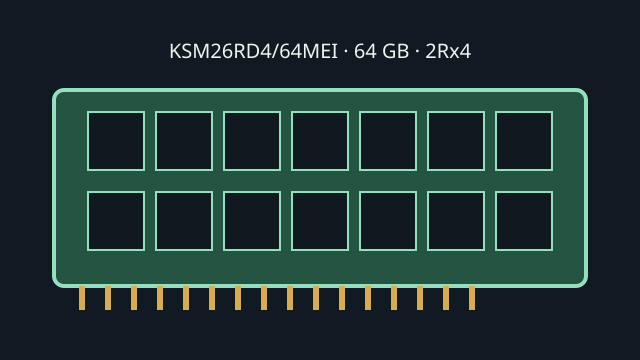

[ KINGSTON SERVER PREMIER // MODEL RECORD ]
KSM26RD4/64MEI
A high-capacity 64 GB server module using DDR4 ECC and registered signaling. The RDIMM buffer is a platform-level requirement and is distinct from ECC error correction.

Model specifications
| Capacity / module | 64 GB; 288-pin DDR4 DIMM |
|---|---|
| Rank / chip organization | 2Rx4 dual rank; x72 module organization (64 data + 8 ECC bits), x4 DRAM devices. |
| Speed / JEDEC | DDR4-2666, 2666 MT/s (PC4-21300R); JEDEC CL19 at 1.2 V. |
| Voltage | 1.2 V nominal VDD/VDDQ. |
| ECC / buffering | ECC Registered DIMM (RDIMM); command/address registered, not load-reduced. |
| Platform compatibility | Requires a DDR4 server platform qualified for 64 GB 2Rx4 RDIMMs and 2666 MT/s or better. Intel Xeon Scalable 3rd Gen supports DDR4 up to 3200 MT/s and can operate at a lower rate when the DIMM or configuration requires it. Confirm CPU, motherboard, firmware, population rules and exact QVL. |
Service and compatibility notes
- Use only in a host whose memory controller and board support ECC RDIMMs; do not substitute a UDIMM or mix registered and load-reduced types without explicit platform qualification.
- The maximum transfer rate can decrease with older CPUs or higher DIMMs-per-channel loading.
- Retain the exact label and SPD data because component and SPD revisions may change within a product family.
Manufacturer & standards sources
- Kingston — KSM26RD4/64MEI product datasheetSKU-specific module specification.
- Kingston — Server Premier memory product familyManufacturer product-family source.
- Intel — Xeon Gold 6338 specificationsCPU memory type/rate context; not an exact-DIMM QVL.
- JEDEC — JESD79-4 DDR4 SDRAM standard